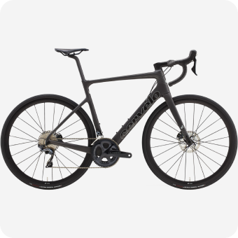

Шоссе, ТТ и Грэвел
Триатлонные старты, горные серпантины или
грейвел заезды по живописным маршрутам -
нужно только определиться с выбором
велосипеда и отправиться в путь.
Cannondale Systemsix


«Катайся много или мало, долго или коротко, как хочешь - но катайся»
Эдди Меркс
Велогонщик
Шоссе
На шоссейном велосипеде можно ездить по асфальту на разных градиентах: будь то горы или равнины. Гонки проходят в командном пелотоне, но тренироваться можно и самостоятельно.


Велосипеды
-

Cervelo Caledonia-5
-

Cannondale Systemsix Himod
-

Trek Domane SL-7


Тренировки
Чтобы найти маршрут для тренировки можно воспользоваться сервисом Komoot, а записать эти тренировки поможет приложение Strava, а также это приложение позволит построить тренировочный план.